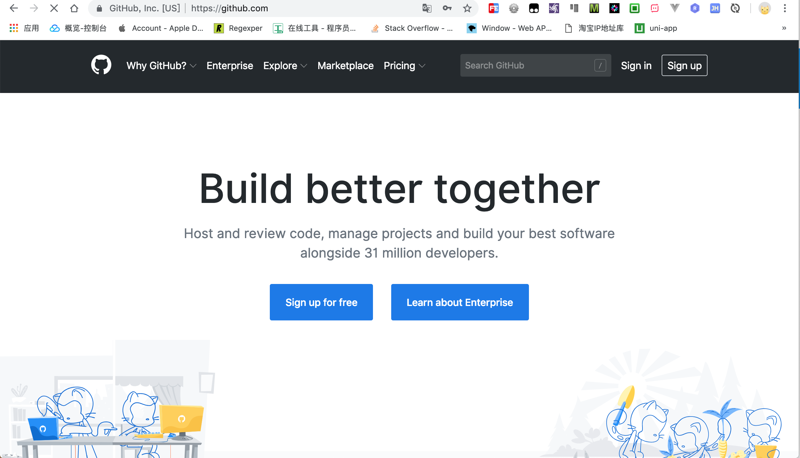
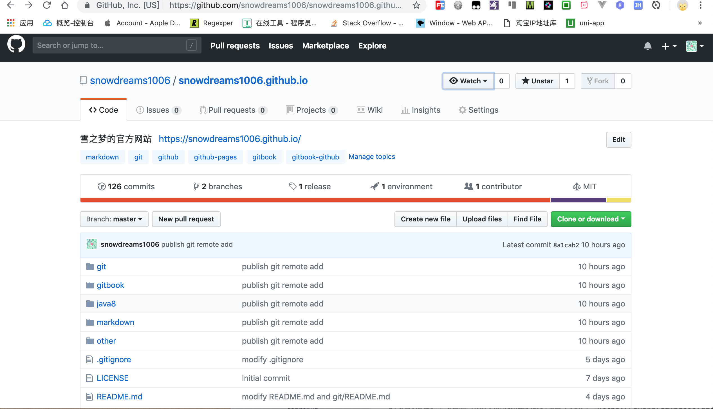
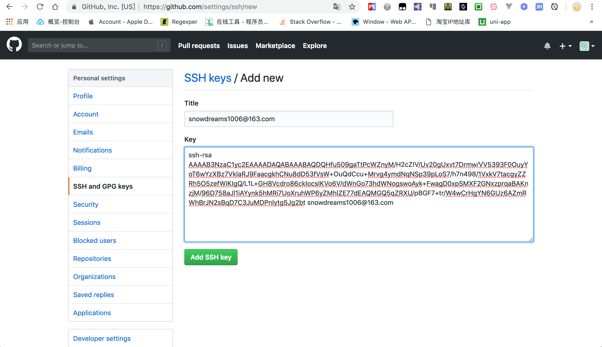
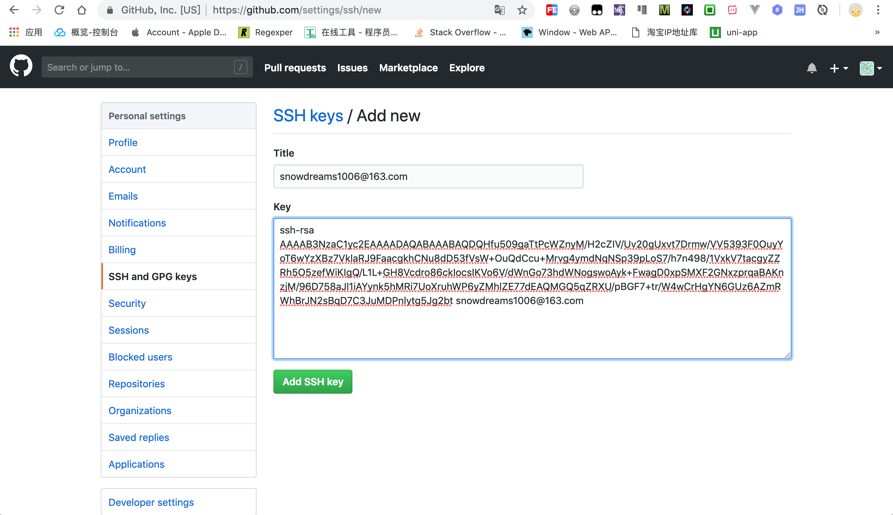
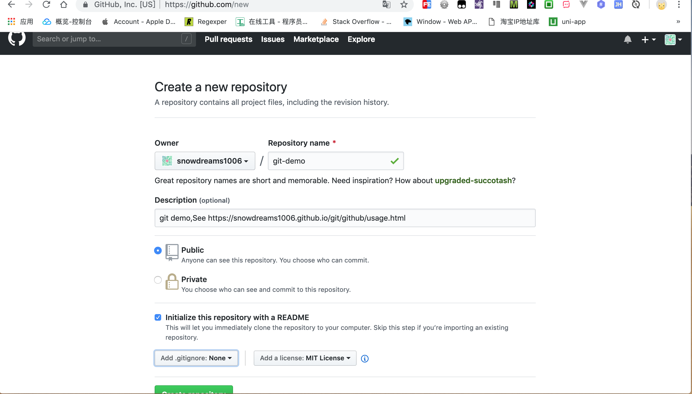
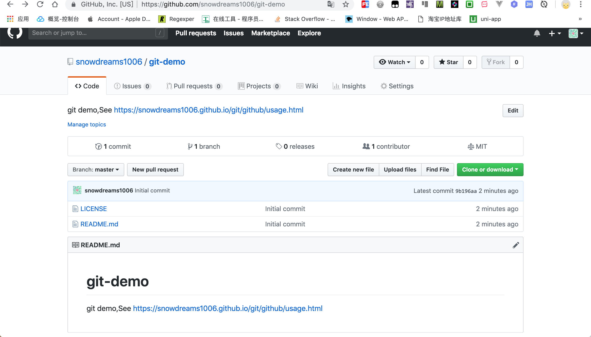
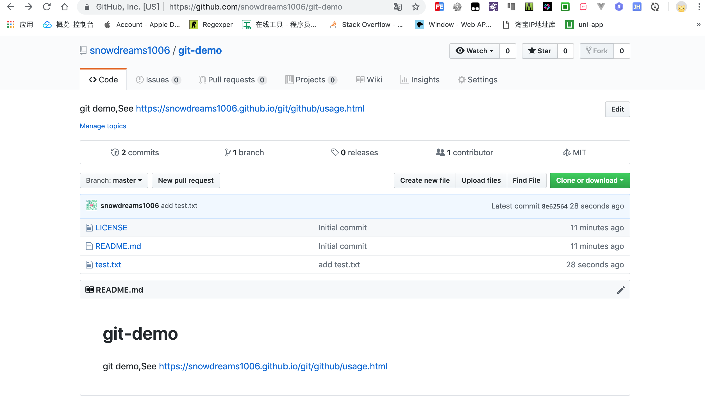

1. github 入门教程
github 是一个基于 git 的代码托管平台,是平时工作学习的好帮手,学会如何用好 github 网站能够帮助我们更好分享代码或者与其他开发人员合作.

1.1. 注册 github 账号
首先准备好邮箱和密码,然后在 github 官网注册新账号,和大多数网站类似的注册流程,唯一注意的是你要想好注册类型,针对个人用户来说,一般无外乎个人账号和项目账号两种,比如 snowdreams1006 就认为是个人账号,而这种 security-plus 认为是项目账号.
其实这两种账号对于 github 来说是一样的,不像是个人账号同企业账号的差异那么大,那为什么称个人账号和项目账号呢?
是因为,大多数个人开发者名下会有多款开源作品,这些作品既可以全部挂载在某一个开发者账号下面,也可以单独挂载某一个开发者账号下面,如果此时的账号名恰好是项目名岂不是清晰多了?
因为个人刚开始可能并没多大名气,如果一个产品直接挂载在个人名下,那么这个产品很大程度上就依赖于个人名气了,所以不妨反过来,用产品说话,事实胜于雄辩,这种做法也是一种常用的宣传手段,很多个人开源产品正是这么做的!
除此之外项目账号还有一个好处,利用 github 的静态网站托管服务可以免费快速搭建项目官网,只要创建一个snowdreams1006.github.io 的项目,那么这个项目就可以作为静态网站的源码项目了,访问 https://snowdreams1006.github.io 就能看到项目官网了!
注意: snowdreams1006仅仅是笔者用户名,实际需要替换成读者的用户名

1.2. 配置 github
既然项目已经托管到 github 网站,那本地如何访问到远程仓库呢?常用的方式有两种,一种是 https 方式,每次都需要输入密码,另外一种是 ssh 方式,只需要一次配置ssh 密钥对.
这里我们重点介绍最常用也是最方便的第二种 ssh 方式访问 github ,大致思路是本地生成密钥对,然后将公钥上传给 github 表明身份,之后本地再次推送给远程仓库时,github 自然就能识别到我们身份了.
第一步: 生成密钥对
默认情况下,会在当前用户目录下生成一对密钥对.
ssh-keygen -t rsa -C "youremail@example.com"
这里的邮箱 youremail@example.com 需要填写自己的 github 邮箱,之后会提示输入路径和密码,一路回车采用默认值即可,运行结束后会在当前用户目录下
生成一对密钥对,包括公钥和私钥.其中公钥可以发送给任何人,而私钥千万不可泄露.
第二步: 复制公钥
在当前用户根目录下打开 .ssh 目录,其中包括两个文件,一个是公钥 id_rsa.pub ,另一个是私钥 id_rsa,用记事本或者其他方式打开公钥文件,复制其中内容,准备粘贴到github 相关设置项.
# 查看当前用户下的 ssh 目录
ls ~/.ssh
# 查看生成的公钥内容
cat ~/.ssh/id_rsa.pub
第三步: 设置 github
回到 github,点击头像(Acount),选择设置(Settings),再选择左侧的 SSH and GPG keys,点击右侧的NEW SSH Key,然后填写标题(Title),最好是有意义的名称,比如youremail@example.com for github,密钥(Key)填写上一边生成的公钥,一般是以ssh-rsa 开头的一大串字符,最后保存(Add SSH Key).
 

第四步: 验证 ssh
利用 ssh 协议测试一下是否能够正常访问 github 网站,如果出现成功提示,那就证明我们的配置没问题.
ssh -T git@github.com
1.3. 创建远程仓库
登录 github 网站新建远程仓库(New Repository),例如git-demo,默认权限是公开的(public),也可以选择私有的(private),初始化 README.md 文件和 .gitignore 文件以及选择开源协议这些都是可选的,视具体情况而定.

刷新当前页面,应该能到看到已创建好的git-demo 项目,接下来准备将其克隆到本地电脑.

1.4. 克隆到本地仓库
将远程项目克隆到本地工作空间,和之前本地仓库的开发流程一样,例如add commit status 等等,唯一不同的是,多了一步 push 命令,即本地仓库的最新版本需要推送给远程仓库中,只有这样其他小伙伴才能从远程仓库拉取最新版本,进而才能看到你的代码,因而打破各自为政局面,实现团队协同开发.
# 克隆到本地仓库
git clone git@github.com:snowdreams1006/git-demo.git
# 切换到当前项目
cd git-demo
# 创建新文件
touch test.txt
echo "add test.txt" > test.txt
# 添加文件到暂存区
git add test.txt
# 提交文件到本地仓库
git commit -m "add test.txt"
# 推送到远程仓库
git push origin master
提交完成后,登录 github 网站,刷新当前项目 git-demo ,应该能看到我们刚刚提交的新文件test.txt.

1.5. 添加仓库关联
添加本地仓库和远程仓库之间关联,默认本地仓库分支名和远程仓库分支名相同
git remote add origin2 git@github.com:snowdreams1006/git-demo.git
1.6. 查看远程仓库
查看当前配置有哪些远程仓库
git remote
执行时加上
-v参数能够查看别名关联的具体地址,即git remote -v
1.7. 下载远程仓库
从远程仓库下载最新分支数据
git fetch
注意: 该命令并不会自动合并当前分支,如需要合并,需手动执行
git merge命令
1.8. 拉取远程仓库
从远程仓库拉取最新分支数据,自动尝试合并到当前分支,如有冲突,需先解决冲突再合并到当前分支.
git pull
1.9. 推送远程分支
将本地最新版本推送到远程仓库
git push origin master
以上命令将本地 master 分支推送到 origin 远程仓库的 master 分支
1.10. 删除远程仓库
git remote rm origin
作者: 雪之梦技术驿站
链接: https://snowdreams1006.github.io/github/
来源: 雪之梦技术驿站
本文原创发布于「雪之梦技术驿站」,转载请注明出处,谢谢合作!